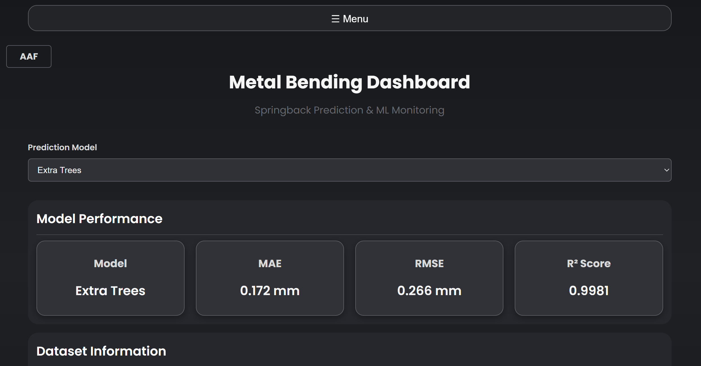

This project involved developing a full-stack dashboard for a digital twin-based robotic bending system used to monitor manufacturing process data and visualize springback prediction results.
The dashboard integrates machine learning model outputs into an interactive monitoring environment featuring data visualization, prediction history tracking, and live process monitoring. The system was designed to support future integration with industrial cameras and sensor data from the physical robotic platform.
The dashboard receives prediction results and manufacturing process data generated by the digital twin system. These outputs are processed and prepared for visualization within the web application.
Backend data workflows organize prediction results and historical records, enabling users to review previous manufacturing runs and compare process outcomes over time.
The frontend presents interactive charts, monitoring panels, and prediction history through a responsive dashboard, allowing users to explore system performance and springback predictions.
The dashboard architecture was designed to support future integration with live sensor streams and industrial camera data from the physical robotic bending system.
Designing a dashboard that clearly presented complex manufacturing data
Solution: Developed multiple visualization components to organize prediction results, process metrics, and
monitoring information into an intuitive interface.
Integrating prediction outputs into a web-based monitoring system
Solution: Built backend workflows to process model outputs and present them through interactive dashboard
components.
Supporting future system expansion while development was still evolving
Solution: Designed a modular dashboard architecture that could accommodate additional data sources, sensors,
and
vision-based systems.
Displaying historical manufacturing results for comparison
Solution: Implemented prediction history features that allow users to review previous runs and compare
process
behavior over time.
Balancing usability with technical information
Solution: Designed an interface that presents engineering data in a clear, interactive format while
remaining
easy to navigate.
Email: zainaboyekade@gmail.com
GitHub: github.com/zainaboyekade-dot